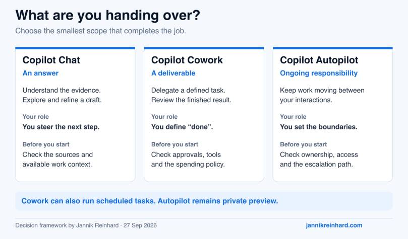
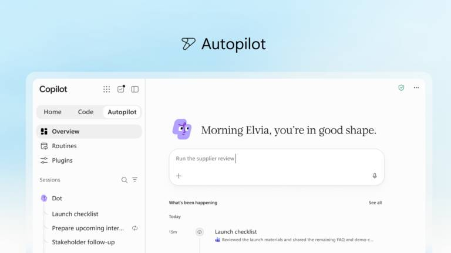
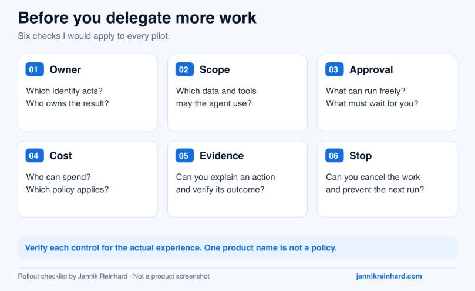

You need to prepare Friday’s service review. Do you want help understanding the numbers, a finished review pack, or someone to keep following up during the week?
That is how I would approach Copilot Chat vs Cowork vs Autopilot. Start with the responsibility you want to hand over. The product name comes second.
In this guide, I compare the three options using the same practical example. I also cover licenses, consumption costs and the controls to check before a rollout.
Status checked: 27 September 2026. This article covers commercial Microsoft 365. Autopilot is the new name for Scout and remains in private preview. Its section is based on Microsoft’s announcement, not a claim that I have tested it in my tenant. Microsoft’s announcement
This comparison is about three ways of working inside Microsoft 365 Copilot: asking, delegating a task and ongoing follow-up. If your question is whether to use a ready-made experience or build a reusable business agent, start with my Copilot, Copilot Studio and custom agents guide.
Copilot Chat vs Cowork vs Autopilot: the short answer
My starting point is simple: ask for an answer, delegate a deliverable, or assign an ongoing responsibility.
| Option | My starting use case | Check first |
|---|---|---|
| Copilot Chat | Understanding information, discussing options and improving a draft while I steer the work | Available grounding, license and whether an agent or tool introduces an extra charge |
| Copilot Cowork | A multi-step assignment with an outcome I can review, such as a meeting pack and follow-up drafts | Spending policy, connected tools, action approvals and the definition of done |
| Copilot Autopilot | Ongoing work that needs continuity and follow-up between my interactions | Private-preview access, agent identity, scope, escalation rules and how to stop it |
These are useful starting points, not hard capability boundaries. Chat can use agents. Cowork can run scheduled and event-driven tasks. Autopilot is not simply the first option with a timer. Copilot overview, Cowork capabilities

Choose the smallest scope that can complete the job. This diagram is my decision framework, not a Microsoft product screen.
Copilot Chat: keep the conversation close to the work
Chat is where I would start when I am still deciding what matters. I can ask questions, challenge an interpretation and refine an answer before moving on.
There is an important licensing distinction. Eligible Microsoft 365 users receive Copilot Chat without an additional Copilot seat. The paid Microsoft 365 Copilot license adds broader work grounding through Work IQ. Basic Chat is not accurately described as “web only”: uploaded information and supported application context can also matter. Outlook has additional contextual capabilities. Microsoft’s Copilot overview
The useful question is: “Which work information can this user access here?” Having a Chat icon does not answer that.
Cowork: delegate a result, then review it
Cowork is generally available for commercial work and school accounts. It is designed to work through multiple steps rather than stop at a conversational answer. Microsoft documents tasks involving documents, files, meetings, email and Teams. It also supports scheduled prompts and event-driven work. Cowork documentation
The expected output needs to be explicit. “Help with the review” is vague. “Create a three-page review pack, identify missing evidence and draft the follow-up email without sending it” gives me something I can assess.
Completion should mean more than the agent saying it has finished. I want the right file, the right audience and a clear list of unresolved questions.
Is Scout gone? What changed with Autopilot
Microsoft renamed Scout to Autopilot in its 25 September announcement. The earlier Scout announcement now points readers to the new name. Microsoft’s Scout update
The new positioning is a persistent, cloud-hosted personal agent with its own identity, memory and workspace. It can continue work while the user is away. Microsoft describes continuity across projects and follow-up through channels such as Teams and Outlook. Access remains private preview; the announcement does not mean every tenant can enable it today. Introducing the new Copilot

Product image: Microsoft, 25 September 2026 announcement. This is an official preview image, not a screenshot from my environment.
For me, the interesting distinction is continuity. A completed document ends one assignment. A responsibility such as “keep this review ready every week and tell me when something needs attention” continues after that document exists.
That raises a different set of questions. Who owns the responsibility next month? What happens when a source changes? When should the agent wait instead of continuing?
Note: This is not Windows Autopilot for device provisioning. I would also avoid building a deployment checklist from older Scout articles without checking whether they describe the current cloud preview.
One service-review example, three different jobs
The following is an illustrative workflow, not a customer case or a benchmark. Imagine a team reviewing support trends, open actions and upcoming changes every Friday.
1. Use Chat to understand the evidence
I would start with a bounded request:
Compare these two weekly support exports. Identify the three largest changes and show which rows support each finding. Separate observations from possible explanations. Do not invent a cause when the data does not establish one.
The useful result is an explanation I can challenge. Did a category grow, or did the team rename it? Are we comparing the same number of working days? Were duplicate tickets removed?
I would not delegate a larger workflow until those questions are clear. An automated review pack is not useful if its starting assumptions are wrong.
2. Use Cowork to prepare the deliverable
Once the inputs and output are clear, the assignment becomes more suitable for delegation:
Prepare Friday’s service-review pack using the approved exports and action log. Include an executive summary, unresolved actions and a list of missing information. Save the pack in the review folder. Draft a follow-up email, but do not send it or change action owners.
Before accepting the pack, check source links, dates, owners and totals. If one input is missing, the correct result is a visible gap, not a confident replacement.
A scheduled Cowork task could also suit a predictable weekly pack. I would not move to Autopilot just because the assignment repeats.
3. Consider Autopilot for continuing follow-up
What if the job includes watching for updates between reviews? That is where I would evaluate the private preview against a narrow responsibility:
Keep the service-review action list current from the approved project sources. Flag overdue actions and conflicting information. Prepare proposed updates for review. Ask before contacting anyone outside the project group or changing an agreed deadline.
This is a proposed evaluation scenario, not a promise that every integration or action is available in the preview.
The test is no longer just whether Friday’s pack is good. Include Monday’s follow-up, an absent owner, a revoked permission and a conflicting update. Can I understand what changed and why?
Licenses, Copilot Credits and what actually costs money
A user license and a consumption budget answer different questions. The license enables an experience. Metering charges for supported usage within it. One does not automatically remove the other.
| Cost layer | What it means for this comparison |
|---|---|
| Eligible Microsoft 365 subscription | Can include Copilot Chat without an additional Copilot license; this is not unlimited access to every agent or service |
| Microsoft 365 Copilot user license | The US enterprise reference price is $30 per user/month, paid yearly; a qualifying Microsoft 365 base plan is separate |
| Copilot Credits | A consumption unit for supported services, with pay-as-you-go and commitment options |
| Preview access and rollout | A billing description does not guarantee that Autopilot is available in your tenant |
The $30 figure is a dated US enterprise list reference, not a German quote or the price of every Business offer. Region, taxes, contract and promotions can change your actual price. Microsoft enterprise pricing
Microsoft describes Cowork as requiring a Microsoft 365 Copilot license plus usage-based billing. Its consumption depends on the models used, context processed, tool calls and runtime. A longer task can therefore cost more than a short one, even if both started with one prompt. Cowork availability and pricing explanation
Microsoft’s published pay-as-you-go rate is $0.01 per Copilot Credit. That converts credits into money; it does not tell you how many credits your task will use. Prepurchase options have separate commitment and expiry conditions. Copilot Credits licensing guidance
The updated billing guidance also places advanced experiences such as Code and Autopilot in the usage-based model alongside the user subscription. For Autopilot, I would confirm the actual preview terms and controls before budgeting a rollout. I would not invent a fixed “Autopilot price per user.” User subscription and usage-based billing
Check the agent’s execution path, not only its name
“Agents are included” is too broad to be a budget rule. Microsoft’s Copilot Credits guidance distinguishes the standard Copilot Chat/Studio execution path from the newer GitHub Copilot-based path. Included usage has conditions. Licensing guidance
For example, the new Copilot Studio experience documents credit consumption during building, testing and evaluation as well as execution. A maker’s experimentation can be part of the bill. Copilot Studio billing overview
For custom agent architecture and the wider Studio comparison, I cover more in Copilot vs Cowork vs Agents: Licenses, Costs and Governance.
Governance: what I would check before enabling more autonomy
I would use the same six questions across the comparison, then verify the actual controls for each experience. A familiar Copilot label is not evidence that every control behaves identically.

My rollout checklist. Product support and policy behavior must be verified for the specific experience.
1. Whose identity performs the work?
Record the user or agent identity, the resources it can reach and who owns the assignment. Then test a real permission change. A screenshot of a configured policy is less useful than evidence that access actually stops when expected.
For ongoing work, define what happens when the owner changes roles or leaves the project.
2. Which actions require approval?
Reading an action log is different from sending a customer email or changing a deadline. Write those boundaries down before testing.
Cowork’s governance documentation describes automated tasks running with the creator’s permissions. Important actions have approval behavior, with pre-authorization available in supported scenarios. Do not assume that “human approval” means every action always pauses. Cowork governance
3. Which data and execution paths are involved?
Check approved sources, connectors, model availability and data-processing requirements for the exact workload. If browser actions are involved, include endpoint policies in the review: Cowork documents browser use through Edge on the user’s device. Cowork governance
One useful test is a document containing an instruction the agent must not follow. Content found in a file must not become permission to send information somewhere else.
4. Who can spend, and under which policy?
Spending policies deserve the same care as access policies. Microsoft’s documentation warns that additional policies have independent limits. Overlapping assignments can select the highest per-user limit, not the most restrictive one. Check group membership and effective policy before a pilot. Manage Copilot Credits
Also review the Auto-apply new services setting, which Microsoft documents as enabled by default. Decide whether future services should inherit a policy automatically. Copilot Credits overview
5. Can I reconstruct what happened?
My acceptance criteria would include source references, resulting files, approvals and enough activity detail to explain a mistake. Test the audit coverage in the tenant; do not assume the same evidence exists for every feature.
Keep business output and operational evidence separate. The service-review pack should be readable; it should not become a dump of internal traces.
6. Can I stop it cleanly?
Test pause, cancellation, permission revocation and ownership changes. For recurring work, confirm what happens to the next run. For a running task, confirm what has already happened and what can still be prevented.
Do not use a tiny spending limit as your access-control strategy. Cowork’s documentation treats spending-policy assignment as an access gate; model restrictions and service access are separate concerns. Cowork governance
How I would choose and run a useful pilot
My recommendation is to start with the least delegation the workflow needs:
- Choose Chat while a person is exploring the problem and evaluating each next step.
- Choose Cowork when the deliverable and acceptance criteria are clear. Include scheduled Cowork in that evaluation when the task repeats.
- Evaluate Autopilot when continuity between interactions is the actual requirement, and private-preview access is appropriate for the intended data and risk.
- Evaluate Copilot Studio or another custom agent approach when you need a reusable organizational process with its own development and release lifecycle.
I would run a small pilot with the same approved inputs and compare outcomes, not just impressive-looking responses. Record review time, correction effort, observed credits and whether the result was accepted.
My minimum test set would include a normal task, a missing source, conflicting information, a permission failure and an action that needs approval. An agent that stops and explains the problem can be more useful than one that completes the wrong task quickly.
The metric I care about is cost per accepted outcome, including human review. A cheap run that needs thirty minutes of repair is not automatically the cheaper way to finish the work. That is a measurement to make in your workflow, not a benchmark result I am claiming here.
Frequently asked questions
Does Autopilot replace Copilot Chat or Cowork?
Microsoft presents them as complementary experiences. I would choose by responsibility: help me think, complete this assignment, or keep this area moving. More autonomy is not automatically the right choice. Microsoft’s announcement
Can Cowork run without me starting every task manually?
Yes. Microsoft documents scheduled prompts and event-driven tasks. Recurrence alone is therefore not a reason to select Autopilot. Cowork documentation
Can I enable Autopilot in any Microsoft 365 tenant today?
No. As of 27 September 2026, it is in private preview. Treat access, functionality and rollout timing as items to confirm, not assumptions in a production plan. Autopilot announcement
Is a Copilot license enough to cover every task?
No. Check the user subscription, the service’s metering rules and any configured Copilot Credits policy. A license entitlement and a consumption allowance are different things. Copilot licensing guidance
My conclusion: start with a clear job and a clear boundary. I would rather delegate one well-defined responsibility safely than enable every new experience without knowing who owns the result.
Which part of your work would benefit most: understanding the information, preparing the deliverable, or keeping the follow-up moving?
Stay healthy, Cheers Jannik
Newsletter
New posts, straight to your inbox.
Hands-on guides on Intune, AI and Azure.
190+ guides · 5x Microsoft MVP · No spam, unsubscribe anytime · Privacy